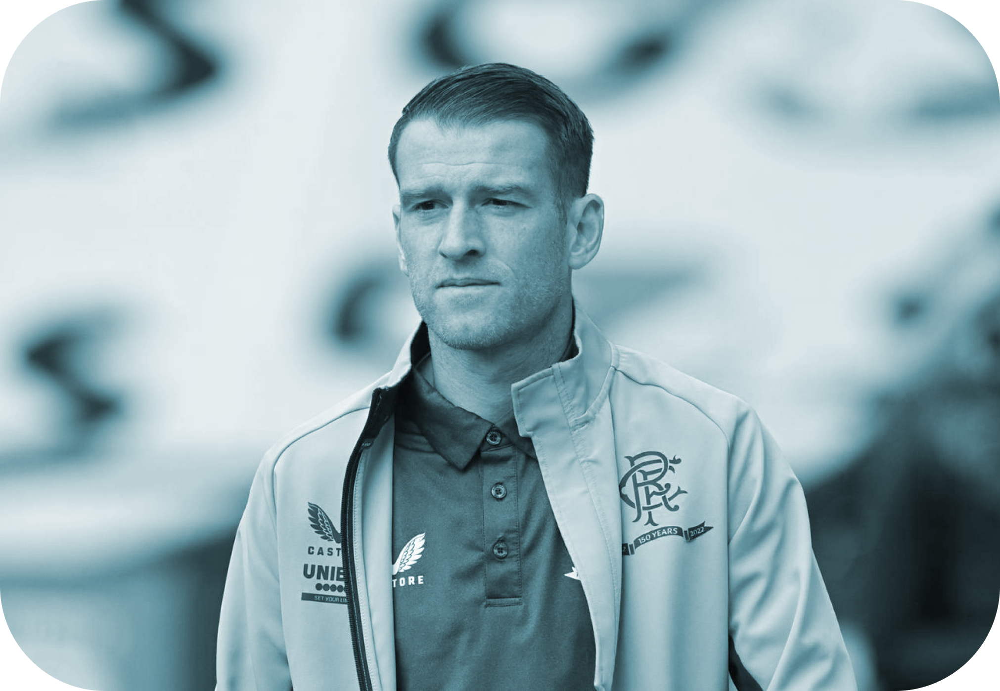

Name:
jose MourinhoAge:
78Nationality:
Portuguese
Height
1.76 m josé Márino dos Santos Mourinho Félix, GOIH, is a Portuguese professional football manager and former player who is the current head coach of Italian Serie A club Roma. Nicknamed "The Special One", he is widely considered to be one of the greatest managers of all time, and is one of the most decorated managers ever.
He enjoyed a staggering win percentage of 71.91. Managing a total of 1,000 matches, Mourinho has sealed 638 wins to date. He has also seen his sides register 204 draws and 158 losses. He has a win percentage of 63.80.14 Sept 2021 Team: Roma as, Chelsea, Inter, Real Madrid, ...Professions: football managers, manager